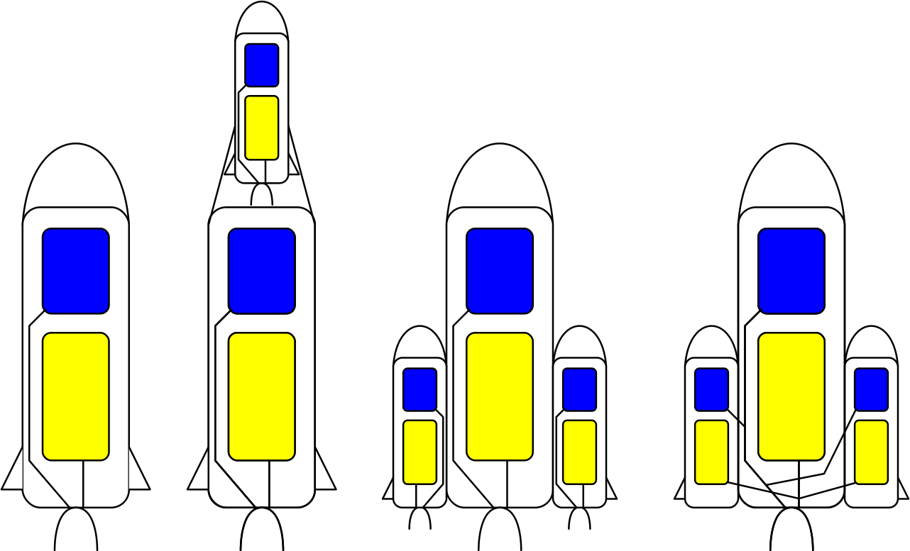

Ракета-носитель
Ракета-носитель – это разновидность баллистической ракеты, которая способна вывести полезную нагрузку за пределы атмосферы планеты. Как правило, РН имеют несколько ступеней, для их запуска используют вертикальный или воздушный старт. Ракеты космического назначения могут выводить грузы на низкие опорные, геопереходные и геостационарные (ГСО) орбиты.
Полезная нагрузка, доставляемая на орбиту, является лишь малой долей (ничтожные 1,5-2,0 %) от общего веса ракеты. Ее основную массу составляют элементы конструкции, а также окислитель и топливо. Получается, что РН поднимает в первую очередь саму себя и лишь в небольшой степени полезный груз.
Устройство ракет-носителей
Двигатели
Двигатели – важнейшая составная часть ракеты-носителя. Они создают силу тяги, за счет которой ракета поднимается в космос.
В основе действия ракетных двигателей – третий закон Ньютона. Историческая формулировка этого закона говорит, что любому действию всегда есть равное и противоположное противодействие, проще говоря – реакция. Поэтому и двигатели такие называются реактивными.
Реактивный ракетный двигатель в процессе работы выбрасывает вещество (так называемое рабочее тело) в одном направлении, а сам движется в противоположном направлении. Самый близкий, «земной», пример – это отдача, которая получается при стрельбе из огнестрельного оружия. Рабочим телом здесь выступают пуля и пороховые газы, вырывающиеся из ствола.
Два важнейших компанента для создания реактивной тяги - горючее и окислитель. Чаще всего в качестве оксилителя используют кислород в жидком состоянии, а в качестве горючего выступает метан или киросин. Эти два компонента при смешивании обазуют настоящий взрыв, который затем необходимо направить чётко вниз для старта ракеты. Смешивание производтся в камере сгорания, а конфузор создает перепад давления. В этой стадии давление возрастает, а далее, переходя в сопло двигателя, наоборот - уменьшается. Тем самым создавая точное направление условного взрыва. Чаще всего для "вытеснения" компонентов используют сжатый газ, или используют специальные насосы, которы перегоняют содержимое баков в камеру сгорания
Также двигатели бывают твердотопливными, но используются только для ускорителей ракеты, т.к. процесс горения не возможно отмненить или приостоновить, не дождавшисть полного сгорания топлива.
Разгонный блок
Может показаться, что как только ракета вышла в космос, то цель достигнута. Но это не всегда так. Целевая орбита космического аппарата или полезного груза может быть гораздо выше линии, от которой начинается космос. Так, например, геостационарная орбита, на которой размещаются телекоммуникационные спутники, расположена на высоте 35 786 км над уровнем моря. Вот для этого и нужен разгонный блок, который, по сути, является еще одной ступенью ракеты. Космос начинается уже на высоте 100 км, там же начинается невесомость, которая является серьезной проблемой для обычных ракетных двигателей.
Для перемещения космического аппарата или корабля на целевую орбиту или направления его на отлетную или межпланетную траекторию разгонный блок должен иметь возможность выполнить один или несколько маневров, при совершении которых изменяется скорость полета. А для этого необходимо каждый раз включать двигатель. Причем в периоды между маневрами двигатель находится в выключенном состоянии.
Ступени
Полезная нагрузка, выводимая в космос, составляет лишь малую долю массы ракеты. Ракеты-носители главным образом «транспортируют» себя, то есть собственную конструкцию: топливные баки и двигатели, а также топливо, необходимое для их работы. Топливные баки и ракетные двигатели находятся в разных ступенях ракеты и, как только они вырабатывают свое топливо, то становятся ненужными. Чтобы не нести лишний груз, они отделяются. Кроме полноценных ступеней применяются и внешние топливные емкости, не оснащенные своими двигателями. В процессе полета они также сбрасываются.
Существует две классические схемы построения многоступенчатых ракет: c поперечным и продольным разделением ступеней. В первом случае ступени размещаются одна над другой и включаются только после отделения предыдущей, нижней, ступени. Во втором случае вокруг корпуса второй ступени расположены несколько одинаковых ракет-ступеней, которые включаются и сбрасываются одновременно. В этом случае двигатель второй ступени также может работать при старте. Но широко применяется и комбинированная продольно-поперечная схема.

Союз
- Год: 1966
- Страна: СССР
- Высота: 50,67м.
- Масса: ~300т.
- Полезная нагрузка:
7,100т.
«Союз» - серия советских трехступенчатых ракетоносителей, которые на протяжении нескольких десятилетий оставались лучшими аппаратами для запусков космических кораблей разного типа и назначения на орбиту Земли.
Руководителями проекта были Королев С. П. и Козлов Д. И. Эксплуатация серии ракетоносителей началась в 1963 году, причем по аналогии с моделью, на которой базировался новый носитель, их все еще называли «Восход». С 1966 года в обиход официально вошло название «Союз».
При разработке ракетоносителя «Союз» одной из ключевых задач, стоявших перед конструкторами, было создать систему для спасения экипажа в случае аварийной ситуации. В итоге была разработана и реализована система аварийного спасения (САС), которая активировалась до старта ракеты и в случае необходимости обеспечивала спасения экипажа на старте или на любом участке полета.
Космические корабли
Космический корабль — это космический летательный аппарат, предназначенный для полёта людей (пилотируемый космический летательный аппарат).
Отличительная особенность космических кораблей — наличие герметичной кабины с системой жизнеобеспечения для космонавтов. Корабли для полёта по геоцентричным орбитам называются кораблями-спутниками, а для полёта к другим небесным телам — межпланетными (экспедиционными).
Разрабатываются транспортные космический корабли многократного использования для доставки людей и грузов с Земли на низкую геоцентрическую орбиту и обратно, например для связи с долговременной орбитальной станцией. Транспортировка людей и грузов с низкой геоцентрической орбиты на более высокую, вплоть до стационарной, и обратно предусматривается с помощью автоматических космических ракет-буксиров. Изучаются проекты автоматических и кораблей-буксиров для перехода с геоцентрической орбиты на селеноцентрическую, планетоцентрическую и обратно.
Устройство (на примере "Союз")
Высота корабля - 6,98 м, максимальный диаметр - 2,72 м (диаметр спускаемого аппарата - 2,2 м), стартовая масса - до 7,22 т (масса спускаемого аппарата - около 2,9 т). "Союз МС" рассчитан на экипаж до трех человек (при росте космонавта 150-190 см и весе 50-95 кг). Может доставлять на околоземную орбиту полезный груз весом до 200 кг, возвращать на Землю - до 65 кг (при экипаже из трех человек). Полетный ресурс корабля составляет 200 суток.
Для обеспечения безопасности экипажа при запуске корабль оснащен системой аварийного спасения (САС). Она позволяет сохранить жизни космонавтам в случае возникновения аварийной ситуации на ракете-носителе.
Стыковка "Союза МС" с орбитальной станцией, как правило, осуществляется в автоматическом режиме, но может проводиться также вручную (командиром корабля). Стандартной схемой сближения с МКС является двухсуточная, когда корабль совершает 34 витка вокруг Земли. С апреля 2017 года стала применяться также укороченная схема - шестичасовая четырехвитковая. 14 октября 2020 года на "Союзе МС-17" впервые была опробована сверхкороткая (двухвитковая) схема, по которой полет к станции длится немногим более трех часов. Прежде эта схема прошла отработку на пяти грузовых кораблях "Прогресс МС".